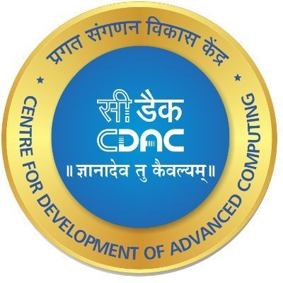

- General Questions about Java
- Java Threads
- Java Collections
- Garbage Collectors
- Exception Handling
Follow us on
Time is Money....
General Questions about Java
What is JVM ? Why is Java called the Platform Independent Programming Language?
A Java virtual machine (JVM) is a process virtual machine that can execute Java bytecode. Each Java source file is compiled into a bytecode file, which is executed by the JVM. Java was designed to allow application programs to be built that could be run on any platform, without having to be rewritten or recompiled by the programmer for each separate platform. A Java virtual machine makes this possible, because it is aware of the specific instruction lengths and other particularities of the underlying hardware platform.
What is the Difference between JDK and JRE ?
The Java Runtime Environment (JRE) is basically the Java Virtual Machine (JVM) where your Java programs are being executed. It also includes browser plugins for applet execution. The Java Development Kit (JDK) is the full featured Software Development Kit for Java, including the JRE, the compilers and tools (like JavaDoc, and Java Debugger), in order for a user to develop, compile and execute Java applications.
What does the “static” keyword mean ? Can you override private or static method in Java ?
The static keyword denotes that a member variable or method can be accessed, without requiring an instantiation of the class to which it belongs. A user cannot override static methods in Java, because method overriding is based upon dynamic binding at runtime and static methods are statically binded at compile time. A static method is not associated with any instance of a class so the concept is not applicable.
Can you access non static variable in static context ?
A static variable in Java belongs to its class and its value remains the same for all its instances. A static variable is initialized when the class is loaded by the JVM. If your code tries to access a non-static variable, without any instance, the compiler will complain, because those variables are not created yet and they are not associated with any instance.
What are the Data Types supported by Java ? What is Autoboxing and Unboxing ?
The eight primitive data types supported by the Java programming language are:
• byte
• short
• int
• long
• float
• double
• boolean
• char
Autoboxing is the automatic conversion made by the Java compiler between the primitive types and their corresponding object wrapper classes. For example, the compiler converts an int to an Integer, a double to a Double, and so on. If the conversion goes the other way, this operation is called unboxing.
What is Function Overriding and Overloading in Java ?
Method overloading in Java occurs when two or more methods in the same class have the exact same name, but different parameters. On the other hand, method overriding is defined as the case when a child class redefines the same method as a parent class. Overridden methods must have the same name, argument list, and return type. The overriding method may not limit the access of the method it overrides.
What is a Constructor, Constructor Overloading in Java and Copy-Constructor
A constructor gets invoked when a new object is created. Every class has a constructor. In case the programmer does not provide a constructor for a class, the Java compiler (Javac) creates a default constructor for that class. The constructor overloading is similar to method overloading in Java. Different constructors can be created for a single class. Each constructor must have its own unique parameter list. Finally, Java does support copy constructors like C++, but the difference lies in the fact that Java doesn’t create a default copy constructor if you don’t write your own.
Does Java support multiple inheritance ?
No, Java does not support multiple inheritance. Each class is able to extend only on one class, but is able to implement more than one interfaces.
What is the difference between an Interface and an Abstract class ?
Java provides and supports the creation both of abstract classes and interfaces. Both implementations share some common characteristics, but they differ in the following features:
• All methods in an interface are implicitly abstract. On the other hand, an abstract class may contain both abstract and nonabstract methods.
• A class may implement a number of Interfaces, but can extend only one abstract class.
• In order for a class to implement an interface, it must implement all its declared methods. However, a class may not implement all declared methods of an abstract class. Though, in this case, the sub-class must also be declared as abstract.
• Abstract classes can implement interfaces without even providing the implementation of interface methods.
• Variables declared in a Java interface is by default final. An abstract class may contain non-final variables.
• Members of a Java interface are public by default. A member of an abstract class can either be private, protected or public.
• An interface is absolutely abstract and cannot be instantiated. An abstract class also cannot be instantiated, but can be invoked if it contains a main method.
Also check out the Abstract class and Interface differences for JDK 8.
What are pass by reference and pass by value ?
When an object is passed by value, this means that a copy of the object is passed. Thus, even if changes are made to that object, it doesn’t affect the original value. When an object is passed by reference, this means that the actual object is not passed, rather a reference of the object is passed. Thus, any changes made by the external method, are also reflected in all places.
Java Threads
What is the difference between processes and threads ?
A process is an execution of a program, while a Thread is a single execution sequence within a process. A process can contain multiple threads. A Thread is sometimes called a lightweight process.
Explain different ways of creating a thread. Which one would you prefer and why ?
There are three ways that can be used in order for a Thread to be created:
• A class may extend the Thread class.
• A class may implement the Runnable interface.
• An application can use the Executor framework, in order to create a thread pool.
The Runnable interface is preferred, as it does not require an object to inherit the Thread class. In case your application design requires multiple inheritance, only interfaces can help you. Also, the thread pool is very efficient and can be implemented and used very easily.
Explain the available thread states in a high-level.
During its execution, a thread can reside in one of the following states:
• Runnable: A thread becomes ready to run, but does not necessarily start running immediately.
• Running: The processor is actively executing the thread code.
• Waiting: A thread is in a blocked state waiting for some external processing to finish.
• Sleeping: The thread is forced to sleep.
• Blocked on I/O: Waiting for an I/O operation to complete.
• Blocked on Synchronization: Waiting to acquire a lock.
• Dead: The thread has finished its execution.
What is the difference between a synchronized method and a synchronized block ?
In Java programming, each object has a lock. A thread can acquire the lock for an object by using the synchronized keyword. The synchronized keyword can be applied in a method level (coarse grained lock) or block level of code (fine grained lock).
How does thread synchronization occurs inside a monitor ? What levels of synchronization can you apply ?
The JVM uses locks in conjunction with monitors. A monitor is basically a guardian that watches over a sequence of synchronized code and ensuring that only one thread at a time executes a synchronized piece of code. Each monitor is associated with an object reference. The thread is not allowed to execute the code until it obtains the lock.
What’s a deadlock ?
A condition that occurs when two processes are waiting for each other to complete, before proceeding. The result is that both processes wait endlessly.
How do you ensure that N threads can access N resources without deadlock ?
A very simple way to avoid deadlock while using N threads is to impose an ordering on the locks and force each thread to follow that ordering. Thus, if all threads lock and unlock the mutexes in the same order, no deadlocks can arise.
What are the basic interfaces of Java Collections Framework ?
Java Collections Framework provides a well designed set of interfaces and classes that support operations on a collections of objects. The most basic interfaces that reside in the Java Collections Framework are:
• Collection, which represents a group of objects known as its elements.
• Set, which is a collection that cannot contain duplicate elements.
• List, which is an ordered collection and can contain duplicate elements.
• Map, which is an object that maps keys to values and cannot contain duplicate keys.
Why Collection doesn’t extend Cloneable and Serializable interfaces ?
The Collection interface specifies groups of objects known as elements. Each concrete implementation of a Collection can choose its own way of how to maintain and order its elements. Some collections allow duplicate keys, while some other collections don’t. The semantics and the implications of either cloning or serialization come into play when dealing with actual implementations. Thus, the concrete implementations of collections should decide how they can be cloned or serialized.
What is an Iterator ?
The Iterator interface provides a number of methods that are able to iterate over any Collection. Each Java Collection contains the iterator method that returns an Iterator instance. Iterators are capable of removing elements from the underlying collection during the iteration.
What differences exist between Iterator and ListIterator ?
The differences of these elements are listed below:
• An Iterator can be used to traverse the Set and List collections, while the ListIterator can be used to iterate only over Lists.
• The Iterator can traverse a collection only in forward direction, while the ListIterator can traverse a List in both directions.
• The ListIterator implements the Iterator interface and contains extra functionality, such as adding an element, replacing an element, getting the index position for previous and next elements, etc.
What is difference between fail-fast and fail-safe ?
The Iterator’s fail-safe property works with the clone of the underlying collection and thus, it is not affected by any modification in the collection. All the collection classes in java.util package are fail-fast, while the collection classes in java.util.concurrent are fail-safe. Fail-fast iterators throw a ConcurrentModificationException, while fail-safe iterator never throws such an exception.
How HashMap works in Java ?
A HashMap in Java stores key-value pairs. The HashMap requires a hash function and uses hashCode and equals methods, in order to put and retrieve elements to and from the collection respectively. When the put method is invoked, the HashMap calculates the hash value of the key and stores the pair in the appropriate index inside the collection. If the key exists, its value is updated with the new value. Some important characteristics of a HashMap are its capacity, its load factor and the threshold resizing.
What is the importance of hashCode() and equals() methods ?
In Java, a HashMap uses the hashCode and equals methods to determine the index of the key-value pair and to detect duplicates. More specifically, the hashCode method is used in order to determine where the specified key will be stored. Since different keys may produce the same hash value, the equals method is used, in order to determine whether the specified key actually exists in the collection or not. Therefore, the implementation of both methods is crucial to the accuracy and efficiency of the HashMap.
What differences exist between HashMap and Hashtable ?
Both the HashMap and Hashtable classes implement the Map interface and thus, have very similar characteristics. However, they differ in the following features:
• A HashMap allows the existence of null keys and values, while a Hashtable doesn’t allow neither null keys, nor null values.
• A Hashtable is synchronized, while a HashMap is not. Thus, HashMap is preferred in single-threaded environments, while a Hashtable is suitable for multi-threaded environments.
• A HashMap provides its set of keys and a Java application can iterate over them. Thus, a HashMap is fail-fast. On the other hand, a Hashtable provides an Enumeration of its keys.
• The Hashtable class is considered to be a legacy class.
What is difference between Array and ArrayList ? When will you use Array over ArrayList ?
The Array and ArrayList classes differ on the following features: • Arrays can contain primitive or objects, while an ArrayList can contain only objects.
• Arrays have fixed size, while an ArrayList is dynamic.
• An ArrayList provides more methods and features, such as addAll, removeAll, iterator, etc.
• For a list of primitive data types, the collections use autoboxing to reduce the coding effort. However, this approach makes them slower when working on fixed size primitive data types.
What is difference between ArrayList and LinkedList ?
Both the ArrayList and LinkedList classes implement the List interface, but they differ on the following features: • An ArrayList is an index based data structure backed by an Array. It provides random access to its elements with a performance equal to O(1). On the other hand, a LinkedList stores its data as list of elements and every element is linked to its previous and next element. In this case, the search operation for an element has execution time equal to O(n).
• The Insertion, addition and removal operations of an element are faster in a LinkedList compared to an ArrayList, because there is no need of resizing an array or updating the index when an element is added in some arbitrary position inside the collection.
• A LinkedList consumes more memory than an ArrayList, because every node in a LinkedList stores two references, one for its previous element and one for its next element.
What is Comparable and Comparator interface ? List their differences.
Java provides the Comparable interface, which contains only one method, called compareTo. This method compares two objects, in order to impose an order between them. Specifically, it returns a negative integer, zero, or a positive integer to indicate that the input object is less than, equal or greater than the existing object. Java provides the Comparator interface, which contains two methods, called compare and equals. The first method compares its two input arguments and imposes an order between them. It returns a negative integer, zero, or a positive integer to indicate that the first argument is less than, equal to, or greater than the second. The second method requires an object as a parameter and aims to decide whether the input object is equal to the comparator. The method returns true, only if the specified object is also a comparator and it imposes the same ordering as the comparator.
What is Java Priority Queue ?
The PriorityQueue is an unbounded queue, based on a priority heap and its elements are ordered in their natural order. At the time of its creation, we can provide a Comparator that is responsible for ordering the elements of the PriorityQueue. A PriorityQueue doesn’t allow null values, those objects that doesn’t provide natural ordering, or those objects that don’t have any comparator associated with them. Finally, the Java PriorityQueue is not thread-safe and it requires O(log(n)) time for its enqueing and dequeing operations.
What do you know about the big-O notation and can you give some examples with respect to different data structures ?
The Big-O notation simply describes how well an algorithm scales or performs in the worst case scenario as the number of elements in a data structure increases. The Big-O notation can also be used to describe other behavior such as memory consumption. Since the collection classes are actually data structures, we usually use the Big-O notation to chose the best implementation to use, based on time, memory and performance. Big-O notation can give a good indication about performance for large amounts of data.
What is the tradeoff between using an unordered array versus an ordered array ?
The major advantage of an ordered array is that the search times have time complexity of O(log n), compared to that of an unordered array, which is O (n). The disadvantage of an ordered array is that the insertion operation has a time complexity of O(n), because the elements with higher values must be moved to make room for the new element. Instead, the insertion operation for an unordered array takes constant time of O(1).
What are some of the best practices relating to the Java Collection framework?
• Choosing the right type of the collection to use, based on the application’s needs, is very crucial for its performance. For example if the size of the elements is fixed and know a priori, we shall use an Array, instead of an ArrayList.
• Some collection classes allow us to specify their initial capacity. Thus, if we have an estimation on the number of elements that will be stored, we can use it to avoid rehashing or resizing.
• Always use Generics for type-safety, readability, and robustness. Also, by using Generics you avoid the ClassCastException during runtime.
• Use immutable classes provided by the Java Development Kit (JDK) as a key in a Map, in order to avoid the implementation of the hashCode and equals methods for our custom class.
• Program in terms of interface not implementation.
• Return zero-length collections or arrays as opposed to returning a null in case the underlying collection is actually empty.
What’s the difference between Enumeration and Iterator interfaces ?
Enumeration is twice as fast as compared to an Iterator and uses very less memory. However, the Iterator is much safer compared to Enumeration, because other threads are not able to modify the collection object that is currently traversed by the iterator. Also, Iteratorsallow the caller to remove elements from the underlying collection, something which is not possible with Enumerations.
What is the difference between HashSet and TreeSet ?
The HashSet is Implemented using a hash table and thus, its elements are not ordered. The add, remove, and contains methods of a HashSet have constant time complexity O(1). On the other hand, a TreeSet is implemented using a tree structure. The elements in a TreeSet are sorted, and thus, the add, remove, and contains methods have time complexity of O(logn).
5.1 What is the purpose of garbage collection in Java, and when is it used ?
The purpose of garbage collection is to identify and discard those objects that are no longer needed by the application, in order for the resources to be reclaimed and reused.
What does System.gc() and Runtime.gc() methods do ?
These methods can be used as a hint to the JVM, in order to start a garbage collection. However, this it is up to the Java Virtual Machine (JVM) to start the garbage collection immediately or later in time.
When is the finalize() called ? What is the purpose of finalization ?
The finalize method is called by the garbage collector, just before releasing the object’s memory. It is normally advised to release resources held by the object inside the finalize method.
If an object reference is set to null, will the Garbage Collector immediately free the memory held by that object ?
No, the object will be available for garbage collection in the next cycle of the garbage collector.
What is structure of Java Heap ? What is Perm Gen space in Heap ?
The JVM has a heap that is the runtime data area from which memory for all class instances and arrays is allocated. It is created at the JVM start-up. Heap memory for objects is reclaimed by an automatic memory management system which is known as a garbage collector. Heap memory consists of live and dead objects. Live objects are accessible by the application and will not be a subject of garbage collection. Dead objects are those which will never be accessible by the application, but have not been collected by the garbage collector yet. Such objects occupy the heap memory space until they are eventually collected by the garbage collector.
What is the difference between Serial and Throughput Garbage collector ?
The throughput garbage collector uses a parallel version of the young generation collector and is meant to be used with applications that have medium to large data sets. On the other hand, the serial collector is usually adequate for most small applications (those requiring heaps of up to approximately 100MB on modern processors).
When does an Object becomes eligible for Garbage collection in Java ?
A Java object is subject to garbage collection when it becomes unreachable to the program in which it is currently used.
Does Garbage collection occur in permanent generation space in JVM ?
Garbage Collection does occur in PermGen space and if PermGen space is full or cross a threshold, it can trigger a full garbage collection. If you look carefully at the output of the garbage collector, you will find that PermGen space is also garbage collected. This is the reason why correct sizing of PermGen space is important to avoid frequent full garbage collections. Also check our article Java 8: PermGen to Metaspace.
What are the two types of Exceptions in Java ? Which are the differences between them ?
Java has two types of exceptions: checked exceptions and unchecked exceptions. Unchecked exceptions do not need to be declared in a method or a constructor’s throws clause, if they can be thrown by the execution of the method or the constructor, and propagate outside the method or constructor boundary. On the other hand, checked exceptions must be declared in a method or a constructor’s throws clause. See here for tips on Java exception handling.
What is the difference between Exception and Error in java ?
Exception and Error classes are both subclasses of the Throwable class. The Exception class is used for exceptional conditions that a user’s program should catch. The Error class defines exceptions that are not excepted to be caught by the user program.
What is the difference between throw and throws ?
The throw keyword is used to explicitly raise a exception within the program. On the contrary, the throws clause is used to indicate those exceptions that are not handled by a method. Each method must explicitly specify which exceptions does not handle, so the callers of that method can guard against possible exceptions. Finally, multiple exceptions are separated by a comma.
What is the importance of finally block in exception handling ?
A finally block will always be executed, whether or not an exception is actually thrown. Even in the case where the catch statement is missing and an exception is thrown, the finally block will still be executed. Last thing to mention is that the finally block is used to release resources like I/O buffers, database connections, etc.
What will happen to the Exception object after exception handling ?
The Exception object will be garbage collected in the next garbage collection.
How does finally block differ from finalize() method ?
A finally block will be executed whether or not an exception is thrown and is used to release those resources held by the application. Finalize is a protected method of the Object class, which is called by the Java Virtual Machine (JVM) just before an object is garbage collected.